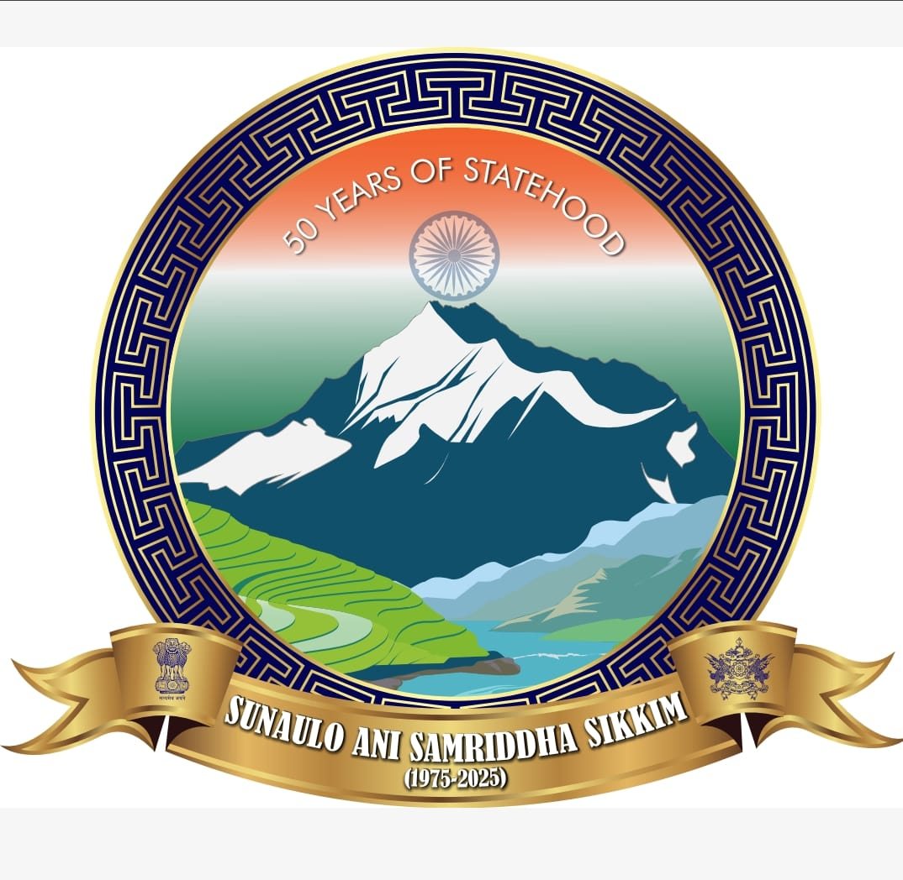

Sikkim Monastery Tourism
Explore Heritage, Culture & Nature

Explore Heritage, Culture & Nature
This beautiful place showcases stunning natural landscapes with a mix of greenery and open skies. It's an ideal spot for photography, relaxation, and enjoying nature’s beauty. The panoramic view helps you immerse yourself into the environment from anywhere.
The cultural richness of this location adds a unique flavor. Visitors often admire the architecture, traditions, and the welcoming vibe of the locals, making it a must-visit destination.
Surrounded by scenic hills and fresh air, the calm environment makes it perfect for meditation and peaceful retreats. It's a blend of beauty, culture, and serenity.